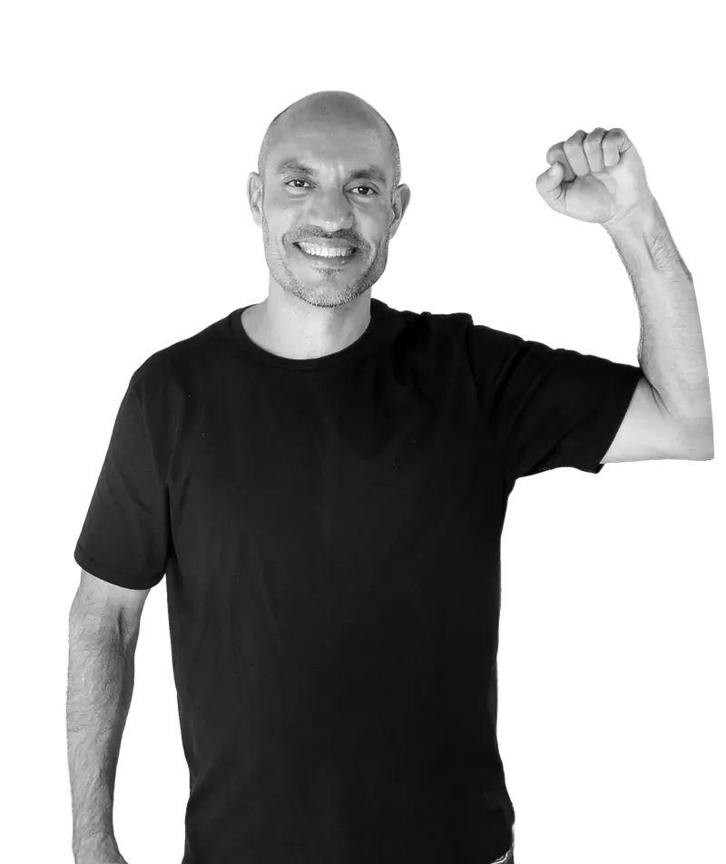
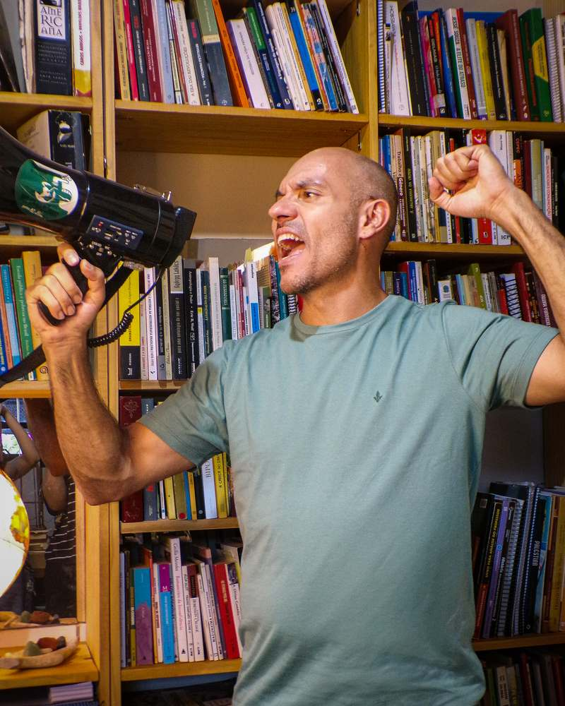

Fernando Viana
Deputado federal por Goiás
Fernando Viana. Para Goiás contra-atacar.
Revogar a contrarreforma trabalhista e reorganizar direitos, jornada e renda.

Por uma esquerda que não teme dizer seu nome
O nosso programaConheça Fernando
Fernando Viana
Fernando Viana é candidato a deputado federal por Goiás pelo PSOL, com o número 5000. Sua candidatura apresenta as dez propostas da Bancada da Esquerda Radical.
Leia as propostasDeputado federal / PSOL / 5000
O programa
Dez propostas para contra-atacar
Dez propostas da Bancada da Esquerda Radical, apresentadas no material da candidatura. Organizadas em quatro eixos, com a numeração do programa original.
Trabalho e proteção social2 propostas
Revogar a contrarreforma trabalhista e reorganizar direitos, jornada e renda.
Revogar a contrarreforma da Previdência e reconstruir a proteção social.
Orçamento, juros e impostos3 propostas
Revogar o novo teto de gastos e instituir o regime de planejamento orçamentário por metas sociais, ambientais e de soberania.
Acabar com a autonomia do Banco Central, combater o endividamento ilegítimo das famílias e reorganizar juros, crédito, câmbio e capitais.
Reduzir a carga tributária paga pelos mais pobres e tributar a renda e a riqueza dos mais ricos nos padrões internacionais.
Indústria, energia e patrimônio público3 propostas
Reverter a desindustrialização e construir o sistema nacional verde e soberano de inovação.
Reestatizar setores estratégicos, garantir soberania energética e criar a Terrabras.
Substituir o Programa Nacional de Desestatização e o processo de privatização nos estados e municípios por um programa nacional de reestatização coordenado pelo governo federal.
Comida barata e soberania comercial2 propostas
Garantir comida barata com reforma agrária, Conab forte e regulação de preços.
Rejeitar o acordo Mercosul–União Europeia e reconstruir a soberania comercial.
A vida é bela. Que as gerações futuras a limpem de todo mal, de toda opressão e de toda violência, e a desfrutem plenamente.
Agenda e notícias
As próximas atividades serão divulgadas aqui.
Conheça o programaPra cima deles.

Converse com quem você conhece, mande as propostas para os seus grupos e fale com a campanha pelos canais oficiais.